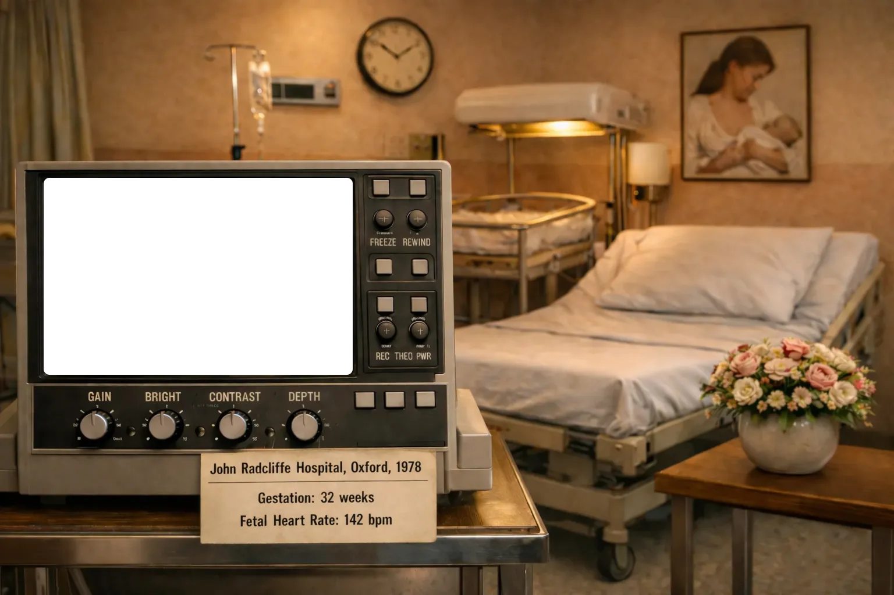

The Chloe Fisher Midwifery Collection and Archive
| Reference number | CFA |
|---|---|
| Level of description | Collection |
| Format | Manuscript, volumes, printed documents |
| Extent | 6 archive linear metres |
| Condition | Fair |
| Administrative history | The Chloe Fisher Archive was donated by Chloe, but deposited by her colleague and friend Sally Inch. It comprises volumes collected by Chloe in her study of midwifery and breastfeeding texts, as well as lecture notes, articles and other materials created by or relating to Chloe's midwifery career. |
| Conditions governing access | Some restrictions may apply |
| Access status | Open |
| Conditions governing reproduction | Restrictions apply on copyrighted work |
| Name | Fisher, Chloe |
Description
This collection was acquired, gathered and preserved by Chloe Fisher and reflects her interests and successful professional career. It includes her library of books relating to infant care and, in particular, breastfeeding, as well as a significant collection of infant care educational materials from the late 19th century to the early 2000s.
Chloe Fisher was born in April 1932. Her first professional qualification, in 1950, was as a Nursery Nurse. In 1955, she became a State Registered Nurse and this was followed, in 1956, with her registration as a State Certified Midwife.
She spent the next 22 years as a Domiciliary/Community Midwife in Oxford, attending mothers at home and in the General Practitioner unit within the local maternity hospital. During this time she qualified as a Midwifery teacher.
Chloe also worked, with others, to set up and coordinate the Oxford Human Milk Bank, in 1974, which is still one of only 16 milk banks in the UK.
In 1978, she was appointed as Midwife in Charge of the Community Midwifery Service in Central Oxford.
Her particular interest in breastfeeding would eventually lead to her taking up the newly created post of Clinical Specialist in Infant Feeding for Oxford in 1991 and she continued in this post until her retirement in 1997. Her successor, Sally Inch, (who had once been her pupil) took over the day Chloe retired and Chloe continued to work (for the next 15 years) as an honorary specialist in the breastfeeding clinic she had set up.
Chloe's earliest interest had been in aspects of the management of the second stage of labour, an interest reflected in the contributions she made to various publications. However, as her passionate interest in breastfeeding grew, she was increasingly keen to discover why so much of what was currently taught in training schools ran counter to her own experience in practice. This led her, in the early 1960s, to scour bookshops for early textbooks. Most of these books are now part of this collection. As Chloe traced the origins of so much mis-information, she began to share her findings, and her empirical experience, in more and more publications.
As well as having numerous published articles and chapters, Chloe has appeared in a number of television broadcasts and educational videos. She has lectured across the world and supported a number of charitable institutions. This area of her work has included:
- Adviser to La Leche League, UK
- Adviser to the Association of Breastfeeding Mothers
- Adviser to the International Lactation Consultants Association
- Previously Tutor to National Childbirth Trust Ante-natal Teachers Training Programme and to the Breastfeeding Promotion Group
- Previously Adviser to National Childbirth Trust, now Honorary Life Member
- Organiser of the Oxford Human Milk Bank, 1974–1997
- Lecturing extensively in the UK and Ireland, as well as in Australia, New Zealand, Israel, France, Netherlands, Sweden, Canada and USA
- Keynote speaker at ILCA Conference, Chicago (1987) and Kansas City (1997)
- Lecturer and instructor ‘Breastfeeding: Practice and Policy Course’ Institute of Child Health, London (in collaboration with WHO & UNICEF), 1992 to present
- Keynote speaker at conference ‘Advances in Breastfeeding’, London, Ontario, Canada, 1992
- UNICEF funded visit to Croatia (in collaboration with Sheila Kitzinger), 1992
- UNICEF consultant in Croatia and Bosnia (six visits 1993–1994), Serbia 1995 and North Macedonia, 1997
- Keynote speaker at ‘The 2001 International Conference on the Theory and Practice of Human Lactation Research and Breastfeeding Management’, Orlando, 2001
- Keynote speaker NZLCA Annual Conference Wellington, New Zealand, 2001